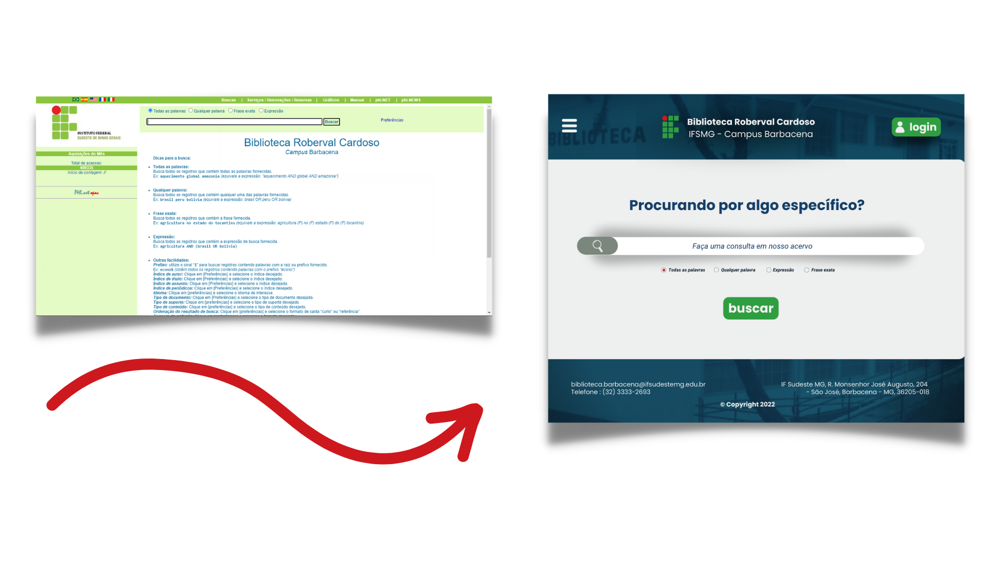

O plugin da Biblioteca IF Sudeste é uma extensão para o navegador Google Chrome, que tem como objetivo aprimorar a UI e a UX do front-end do sistema PHL da biblioteca do IF Sudeste Campus Barbacena. Quando o usuario instalar e habilitar a extensão, ela irá automaticamente manipular a programação visual do site, apresentando uma nova proposta visual para o mesmo.
DownloadProposta
Avaliando o sistema PHL original e suas funcionalidades através de métricas de UX (Experiência Do Usuário) & UI (Interface Do Usuário), foi possível elencar pontos de melhoria. Sendo assim, a proposta central do plugin é promover tais melhorias utilizando um design com menos "poluição visual", paleta de cores mais agradável e fornecendo destaque para as principais funcionalidades do site
